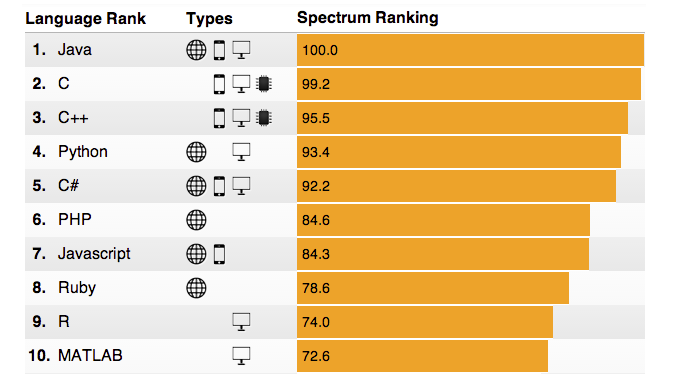

The Afterlife: Languages after JavaScript
jennz0r / @mybluewristband
Eventbrite
(Human) Wasteland
Developers, Developers
Way Back
- Fortran
- MATLAB
- Embedded C
2010 - 2012
2013
Jenn learns JavaScript.
Good news, me! #javascript #programming #developer http://t.co/9Cx01Nyj
— jennz0r (@mybluewristband) February 4, 2013
And uses it.
Yay! My first #javascript: http://t.co/eSifLvgp
— jennz0r (@mybluewristband) February 13, 2013
2016


Jenn learns Python.
And is confused by it.
Concurrently writing JavaScript and Python files to demonstrate to my coworkers their differences... and weirdnesses.
— jennz0r (@mybluewristband) July 14, 2016
Think back...
{ } ;
Rules?!
A Quick History

Python
Python is a widely used high-level, general-purpose, interpreted, dynamic programming language. Its design philosophy emphasizes code readability, and its syntax allows programmers to express concepts in fewer lines of code than possible in languages such as C++ or Java.
- Wikipedia on Python
JavaScript
JavaScript is a high-level, dynamic, untyped, and interpreted programming language.
- Wikipedia on PythonPython |
JavaScript |
|
|---|---|---|
Paradigm |
functional, imperative, object-oriented, procedural, reflective | event-driven, functional, imperative, object-oriented (prototype), scripting |
Appeared |
20 February 1991 | 23 May 1995 |
Influences |
ABC, ALGOL 68, C, C++, Dylan, Haskell, Icon, Java, Lisp, Modula‑3, Perl | AWK, C, HyperTalk, Java, Lua, Scheme, Perl, Python, Self |
Influenced |
Boo, Cobra, CoffeeScript, D, F#, Falcon, Genie, Go, Groovy, JavaScript, Julia, Nim, Ruby, Swift | ActionScript, AtScript, CoffeeScript, Dart, JScript .NET, LiveScript, Objective-J, Opa, Perl 6, QML, TypeScript |
Let's start small.
Comments
// Inline Comment
/*
Multiple
Line
Comment
*/
# Inline Comment
'''
Multiple
Line
Comment
'''
Comments
''' '''
/* */
//
#
Whitespace
It doesn't really matter!- JavaScript
Whitespace
It does matter!- Python
Whitespace
I'm confused.- Jenn
Doing Python and I'm all like "wat" pic.twitter.com/idbMiehhr6
— jennz0r (@mybluewristband) October 1, 2015
Primitives
JavaScript |
Python |
|
|---|---|---|
Boolean |
true, false | True, False |
Nothing |
Null | None |
Empty Value |
Undefined | |
Number |
Number | int, float, long, complex |
Sequences |
Array, tuple | list, tuple, bytearray, buffer, xrange |
Key/Value Store |
Object | Dictionary |
Capitalization matters.
Primitives
What are all these things?
Numbers
int |
Plain integers, 32 bits of precision, implemented using a long in C | |
float |
Implemented using a double in C | |
long |
Long integers, unlimited precision | |
complex |
Have a real and imaginary part, each of which are floats |
Sequences
List |
Constructed with [ ] |
Tuple |
Constructed with ( ), immutable |
bytearray |
Mutable sequence of integers in the range 0 <= x < 256 |
buffer / memoryview |
Replaced by memoryview, memoryview objects allow Python code to access the internal data of an object that supports the buffer protocol without copying |
xrange |
Immutable sequence which is commonly used for looping, always takes the same amount of memory, must be created using xrange() function.= |
Tradeoffs
Faster development with more runtime errors versus slower development with fewer runtime errors.
Take your pick.
Concatenation
Type Coersion
// You can coerce an integer into string in JavaScript
var coerced = 1;
var concatenated = coerced + 'string';
# You can't coerce an integer into a string in Python
not_coerced = 1
concatenated = str(not_coerced) + 'string'
Functions & Conditionals
function drSeuss(catInTheHat, thing1, thing2) {
if (catInTheHat == true &&
thing1 == true &&
thing2 == true) {
console.log('is cray');
} else if (catInTheHat != true) {
console.log('boring');
} else {
console.log('so boring');
}
}
def dr_seuss(cat_in_the_hat, thing1, thing2):
if cat_in_the_hat == True and
thing2 == True and
thing2 == True:
print 'is cray'
elif cat_in_the_hat != True:
print 'boring'
else:
print 'so boring'
Functions & Methods
Oh, there's a difference?- Jenn
Functions & Methods in JavaScript
The global Function object has no methods or properties of its own. However, it does inherit some methods and properties through the prototype chain from Function.prototype.
Declared Functions
vs.
Built In Methods
Functions & Methods
In most respects functions and methods are identical except for two key differences:
- A method is implicitly passed the object on which it was called.
- A method is able to operate on data that is contained within the class.
Ternary
var doILikeChildren = wellBehaved ? 'yes' : 'no'
do_i_like_children = 'yes' if well_behaved else 'no'
A little bigger now.
Prototypes
Inheritance and the Prototype Chain
When it comes to inheritance, JavaScript only has one construct: objects. Each object has an internal link to another object called its prototype. That prototype object has a prototype of its own, and so on until an object is reached with null as its prototype. null, by definition, has no prototype, and acts as the final link in this prototype chain.
Is there a band called "Inheritance and the Prototype Chain" yet?
— jennz0r (@mybluewristband) January 3, 2017
Prototypes vs. Classes
var Mammal = function() {
this.neoCortex = true;
};
var Cat = function(name, years) {
this.name = name;
this.years = years;
};
Cat.prototype = new Mammal;
Cat.prototype.eat = function(food) {
console.log('nom ' + food);
}
var fryCat = new Cat('Fry', 7);
fryCat.eat('steak');
class Mammal(object):
neo_cortex = True
class Cat(Mammal):
def __init__(self, name, years):
self.name = name
self.years = years
def eat(food):
print 'nom %s' % (food)
fry_cat = Cat('Fry', 7)
fry_cat.eat('steak')
Prototypes vs. Classes
var Mammal = function() {
this.neoCortex = true;
}
class Mammal(object):
neo_cortex = True
Prototypes vs. Classes
var Cat = function(name, years) {
this.name = name;
this.years = years;
};
Cat.prototype = new Mammal;
Cat.prototype.eat = function(food) {
console.log('nom ' + food);
}
class Cat(Mammal):
def __init__(self, name, years):
self.name = name
self.years = years
def eat(food):
print 'nom %s' % (food)
Prototypes vs. Classes
var fryCat = new Cat('Fry', 7);
fryCat.eat('steak');
fry_cat = Cat('Fry', 7)
fry_cat.eat('steak')
Scope
Python |
JavaScript |
|
|---|---|---|
Scope |
Lexical | Lexical |
Namespace |
Functions, Classes, Modules | Functions, Classes, Modules |
New Identifiers |
Variables, Functions, Classes | Variables, Functions |
Modules |
Files | None |
This vs. Self
This vs. Self
this is from JavaScript.
self is from Python.
Are they the same?
This vs. Self
this is a special keyword.
self is not a special keyword.
This vs. Self
this can refer to the global object or the containing object depending on the execution context.
self is just convention, is the explicit first argument of a function, and refers to the instance.
MDN
(function() {
function f3() {
return this;
}
f3.call(this) === window; // global object
function f4() {
this.herp = "derp";
}
function Thing(){
this.thisIsEasyToUnderstand = "just kidding";
f4.call(this);
}
var thing = new Thing();
// thing = { thisIsEasyToUnderstand : "just kidding", herp: "derp" };
})();
Window.self
function foo() {
console.log(
window.self === window, // is self window?
window.self === this, // is self this?
this === window // is this window?
);
}
foo(); // true true true
So this could be self if you're in the global scope
This vs. Self
Confusing?
Yes.
Hoisting
var boba = 'passion green tea';
console.log(boba);
function jennsOrder() {
// Variable declaration is hoisted.
// As if var boba; was here.
console.log(boba);
var boba = 'mango green milk tea';
console.log(boba);
}
jennsOrder();
Hoisting
def jenns_order:
print boba
boba = 'mango green milk tea'
ES6!
ECMAScript 6
A new standard released in 2015 by Ecma International.
Prior to that, JavaScript hadn't released a fully new version since 2009.
Ecma International
vs.
Python Foundation
Block Scope
Moar confusion
Block Scope
With the addition of const and let, we now have block scope in JavaScript.
function simpleExample(value) {
if (value) {
var varValue = value;
let letValue = value;
console.log(varValue, letValue);
}
// varValue is available even though it was defined
// in if-block because it was "hoisted" to function scope
console.log(varValue);
// letValue is a ReferenceError because it
// was defined within the if-block
console.log(letValue);
}
Python |
JavaScript |
|
|---|---|---|
Scope |
Lexical | Lexical |
Namespace |
Functions, Classes, Modules | Functions, Blocks |
New Identifiers |
Variables, Functions, Classes | Variables, Functions |
Modules |
Files | None |
Template Literals
let exclamation = 'Whoa!',
sentence = `They're really similar to Python.`;
console.log(`Template Literals: ${exclamation} ${sentence}`);
// Template Literals: Whoa! They're really similar to Python.
Template Literals
print '.format(): {} {}'.format('Yup.', 'Quite!')
// .format(): Yup. Quite!
Default Parameters
function nom(food="ice cream") {
console.log(`Time to eat ${food}`);
}
nom(); // Time to eat ice cream
Default Parameters
def nom(food="ice cream"):
print 'Time to eat {}'.format(food)
nom() # Time to eat ice cream
...Rest Parameters vs. *args
function joke(question, ...phrases) {
console.log(question);
for (let i = 0; i < phrases.length; i++) {
console.log(phrases[i]);
}
}
let es6Joke = "Why does JS single out one parameter?"
joke(es6Joke, "Because it doesn't", 'really like', 'all the REST of them!');
...Rest Parameters vs. *args
def pirate_joke(question, *args):
print question
for arg in args:
print arg
python_joke = "What's a Pyrate's favorite parameter?"
pirate_joke(python_joke, "*args!", "*arrgs!", "*arrrgs!")
Classes
Syntactic sugar
"Classes" vs. Classes
class Mammal {
constructor() {
this.neocortex = true;
}
}
class Cat extends Mammal {
constructor(name, years) {
super();
this.name = name;
this.years = years;
}
eat(food) {
console.log('nom ' + food);
}
}
let fryCat = new Cat('Fry', 7);
fryCat.eat('steak');
class Mammal(object):
neo_cortex = True
class Cat(Mammal):
def __init__(self, name, years):
self.name = name
self.years = years
def eat(food):
print 'nom %s' % (food)
fry_cat = Cat('Fry', 7)
fry_cat.eat('steak')